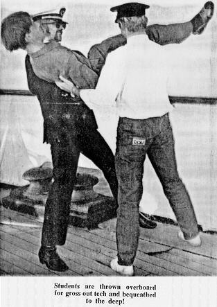
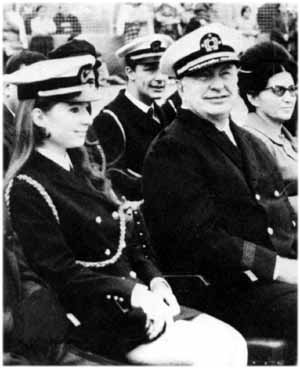

Chapter 17
In Search of Past Lives
'USIS OFFICER STATES HUBBARD RUNS FLOATING UNIVERSITY OF QUESTIONABLE MORAL CHARACTER, NOT ACCREDITED ANY US UNIVERSITIES AND POOR REPRESENTATIVE FOR US ABROAD . . . FLOATING COLLEGE PROBABLY PART OF CHARLATAN CULT.' (CIA cable traffic, June/July 1968)
 (Scientology's account of the years 1968-69.)
(Scientology's account of the years 1968-69.)
Soon after the Royal Scotman docked in Valencia a group of students flew in from Saint Hill to take a 'clearing course' on board the ship. One of them was a pretty, dark-eyed New Yorker called Mary Maren:
'I had a friend in dance class in New York who was into Scientology and he told me about it. They sounded like an interesting group of people and I thought it would be useful to have this exact scientific technology at my disposal. I read Dianetics and it made a lot of sense to me.
'By 1967 I was doing the briefing course at Saint Hill and I saw some people who had come back from this mysterious sea project. One of the guys was terrified, really scared; I had no idea why he was in such a state. Two weeks later more came back. They had lost a lot of weight and looked overwhelmed, as if they had seen some kind of monster in the sea. Later I discovered that they had been cleaning cattle dung out of the ship's hold for two weeks, but I didn't know it at the time. I said to my husband, Artie, I'm never going to join the Sea Org.
'I forgot all that when we all got on a plane to do the clearing course. It was called the New Year Freedom Flight. I'd never been to Spain before and it all seemed very exciting. At that time the ship looked clean, kinda nice. The stateroom I was given was very small and cramped, but everything looked kinda spiffed up. The atmosphere was very congenial.
'LRH was on the ship and in a real jolly mood. He used to stay up late at night on the deck and talk to us into the wee hours about his whole track adventures, how he was a race-car driver in the Marcab civilization. The Marcab civilization existed millions of years ago on another planet; it was similar to planet earth in the 'fifties, only they
had space travel. Marcabians turned out later not to be good guys so it wasn't a compliment that their civilization was similar to ours. LRH said he was a race driver called the Green Dragon who set a speed record before he was killed in an accident. He came back in another lifetime as the Red Devil and beat his own record, then came back and did it again as the Blue Streak. Finally he realized all he was doing was breaking his own records and it was no game any more.
'People would stand around listening to these stories for hours, very over-awed. At the time it seemed a privilege and honour to share these things, to hear him talking about things that went on millions of years ago like it was yesterday. It was usually entertaining, but I sometimes found it very stressful to take it all in, this powerful, booming outflow, and it was hard to get away. One night I was getting dizzy and dared to ask if I could leave early. I could hear my voice echoing in the cosmos as I said, "If you'll excuse me, I have to go to bed, sir." He said, "OK, sure."'[1]
Talking about his past lives to an adoring, captive audience was one of Hubbard's favourite recreational activities. His stories, no matter how outrageous, were always treated seriously, for everyone on the ship was a dedicated Scientologist committed to the concept of past lives and immortality. It was not in the least improbable to Mary Maren, or any of the others who listened to Hubbard talking on the deck of the Royal Scotman on those warm Spanish nights, that he had been a Marcabian racing driver.
One of the recurring features of Hubbard's past lives on this planet was a penchant for secreting his worldly goods underground and one of the frustrations of his present life was his inability to find them. He was deeply disappointed that his cruises round the Canary Islands in the Enchanter had not resulted in replacing the schooner's ballast with gold bars, but now he had more time, more ships and more personnel at his disposal and in February 1968, he asked for volunteers to accompany him on a special mission on the Avon River.
Amos Jessup was among the first to step forward. 'He didn't tell us ahead of time what we were going to do, but it didn't matter to me, I'd have followed him through the gates of Hell if I had to. I was glad to do anything for him because I felt that what he had done to help others was so great an accomplishment he deserved whatever help I could offer. People felt he was a miracle worker, someone who had demonstrated a far higher level of competence than anything we could aspire to. It was as exciting and stimulating as hell to be with him. You had to be on your toes, put out your maximum effort, but it was always very refreshing and therapeutic.'[2]
Hubbard accepted thirty-five volunteers for the mission and for the next few weeks conducted daily training sessions on the deck of the
_______________
1. Interview with Mary Maren, Los Angeles, August 1986
2. Interview with Jessup
Avon River, often watched by envious students hanging over the rails of the Royal Scotman moored alongside in Valencia harbour. With a stop watch in one hand, the Commodore put the crew through innumerable drills to rescue men overboard, fight fires, handle lines, launch and retrieve small boats and repel boarders - he told them he was worried about piracy in the Mediterranean and wanted to be sure they would not panic if that circumstance arrived.
At the beginning of March the Avon River set sail, leaving the Royal Scotman seething with speculation about the nature of her mission. She headed east, back across the Mediterranean once again, and anchored in a sheltered bay off Cap Carbonara, on the south-east coast of Sardinia, where Hubbard mustered the crew on the well deck for a briefing. Standing on a hatch cover so that he could be seen, he told them he was on the threshold of achieving an ambition he had cherished for centuries in earlier lives. This was the first lifetime he had been able to build an organization with sufficient resources, money and manpower to tackle the project they were about to undertake. He had accumulated vast wealth in previous lives, he explained, and had buried it in strategic places. The purpose of their present mission was to locate this buried treasure and retrieve it, either with, or without, the co-operation of the authorities.
Several members of the crew were unable to suppress gasps of excitement at this prospect and he smiled broadly before continuing. To the best of his recollection, when he was the Commander of a fleet of war galleys two thousand years ago, there was a temple somewhere on the coast close to where they were anchored. It was called the Temple of Tenet and the high priestess was a charming lady who, he said with a wink, had 'warmed the hearts of sailors'. His intention was to put several parties ashore next morning to search for the ruins of the temple and the secret entrance where he had buried a cache of gold plates and goblets.
'It was an electrifying idea,' said Jessup. 'We all thought it was high adventure. Here was this guy who had cracked through the age-old mystery of the human condition, had dug into, and uncovered, every aspect of human shortcoming, now broaching into a new area, going to sea with a bunch of people in the Mediterranean and digging up buried treasure. It didn't matter to me if it was true or not, what mattered was being able to play a game that LRH had designed. If it was important to him, I would do the best I could.'
The ruins of the Temple of Tenet at first proved difficult to trace, until Hubbard realized that his recollection was based on ancient sailing instructions whereas he had selected the search area using a modern chart. Once this obstacle had been overcome the ruins were soon found, an event which caused a predictable stir on board the
Avon River only marginally spoiled by the discovery that the site was clearly marked as an ancient monument - it might have been more sensible to locate the temple by looking at a guide book.
The fact that the temple was a known ruin also made it rather difficult for the Scientologists to begin sweeping the area with their metal detectors, let alone starting to dig, without arousing the suspicion of the locals. Although one group reported encountering what appeared to be the hidden entrance and a surreptitious probe with a metal detector was positive, Hubbard decided merely to note their findings and move on.
While the search parties wrote up detailed reports of everything they had found, the Avon River headed south towards the coast of north Africa, to Tunis, where the ancient civilization of Carthage flourished before the birth of Christ. Hubbard said he knew a Carthaginian priest who had hidden a treasure trove of jewels and gold in a temple which he thought he could find. Moored in the harbour of the Tunisian port of Bizerte, the Commodore briefed his eager search parties by making a clay model of what he could recall of the topography around the temple; they were told to scour the coastline for a 'matching' landscape. He was almost always waiting on the deck when the shore parties returned, impatient to know what they had discovered. Sure enough, they found the site of the temple just as he had described it, but erosion had destroyed the secret tunnel which led to where the treasure was hidden. Hubbard went out to the site, confirmed that they had found the right place and pointed out where the erosion had taken place.
Although they had not yet retrieved any treasure, there was not a man or woman on the mission who was not encouraged by what they had discovered thus far. From Bizerte, the Avon River moved along the coast to La Goulette, the outer harbour of Tunis, where an attempt was made to explore the ruins of an underwater city. Their scuba equipment proved unequal to the task and Hubbard mocked up another clay model of yet another temple site, which this time was found to be occupied by a government office building.
While at La Goulette, Joe van Staden, the captain of the Avon River, offended the Commodore in some way, was promptly dismissed and replaced by Hana Eltringham. 'I was working in the between decks area,' she recalled, 'when LRH called me over and said, "You're going to be the new Captain." I went completely numb; I was terrified. I can remember sitting at my desk with my head in my hands muttering, "Oh my God, oh my God." As I sat there I suddenly became aware of him standing in the doorway of his cabin beckoning to me. I got up and walked over to him. He had an E-meter in one hand and he thrust the cans at me and said, "Hold these." I stood there
in the doorway while he was fiddling with the meter and then he said, "I want you to recall the last time you were Captain."
'Through the confusion and fear I was experiencing, my first thought was that this was ridiculous. Then I started to get vague impressions of a time in some past life when I was the Captain of a ship and there was a storm at sea. He said, "Very good, very good" and asked me to go back earlier and I got a very vivid flash of space ships and space travel. It was very real, not an imaginary thing at all. I told him what I had seen, that I was on some space ship being called urgently to my land base. We were going back as fast as we could when we were blown up in space by some enemy. That was followed by confusion and some spinning motion as if the space ship was disintegrating. He had me go through it again and the effects of the experience subsided a lot. "Good," he said, "very good." That was it.
'I went up on the deck and felt the fear and terror in my stomach just disappear. I suddenly felt very able, very competent to tackle anything that came along. Next morning I had to take the ship from one side of La Goulette harbour to the other for re-fuelling, then pick up a pilot to take us out. I thought he would come out and help. No way. I saw him open the curtains of his cabin for a moment, smile to himself a little bit, then close them. I thought, "The old sod isn't even going to give me a hand."'[3]
A few hours out of La Goulette, on an easterly course towards Sicily, steam began pouring from the hatches over the engine room. Cabbie Runcie, the ship's chief engineer, who was the only 'wog' (the Scientologist's name for a non-Scientologist) on board, appeared on the bridge wiping his hands with an oily rag to announce that a piston ring in the high-pressure cylinder had blown and that they would have to stop for repairs. Runcie was nearly seventy years old, a bald, toothless, taciturn, pipe-smoking Scot who preferred to keep his own counsel and Hubbard was both surprised and irritated by his temerity, particularly as he was a 'wog'. The Commodore ordered Hana to stay on course at the same speed, whereupon Runcie disappeared down the steps to the engine room muttering, 'This is madness, this is stupidity.' It was his only recorded comment on the entire voyage.
Steam was still pouring from the engine hatches when the Avon River dropped anchor off the little fishing port of Castellammare on the north coast of Sicily. Thoroughly unconcerned by the banging and swearing from the engine room, Hubbard gathered a small group on the deck and pointed out their next objective - an old watch tower just visible on a high promontory overlooking the harbour. He decreed that the search should take place under cover of darkness and at dusk that evening the search party set out in a rubber dinghy to reconnoitre the watch tower.
_______________
3. Interview with Eltringham
They returned several hours later in a state of high excitement, having registered strong readings on a metal detector in one corner of the watch tower. The following night another expedition was mounted, this time armed with shovels. The crew of the Avon River waited with nerves on edge, but there was no brass-bound chest in the bottom of the dinghy when it bumped against the side of the ship - the rocky foundations of the watch tower had proved too much for shovels. Hubbard, who appeared quite as disappointed as everyone else, said he did not think it was worth wasting any more time at the site. He promised to send the Enchanter back at a later date to find the owner of the land and negotiate its purchase in order to conduct a thorough excavation.
From Sicily, the Avon River sailed across the Straits of Messina to the 'toe' of Italy, anchoring off the barren, rocky coastline of Calabria, which had been Hubbard's territory when he was a tax collector at the time of the Roman empire. Not an entirely honest tax collector, however, for he said he had hidden gold in sacred stone shrines along the coast, figuring that they were less likely to be vandalized.
Two small boats were put ashore with search parties, but none of the shrines could he found. The Avon River steamed up and down the coast while look-outs swept the shore with binoculars, but still to no avail. Hubbard concluded that the coast had been eroded and the shrines washed into the sea, along with all his hidden gold.
There was, nevertheless, a palpable aura of anticipation building up on board the Avon River for everyone knew the climax of the mission was still to come - a visit to a secret space station on the island of Corsica. Hubbard had shown a few favoured members of the crew, including Hana Eltringham, several pages of handwritten and typed notes describing the existence and location of the station in mountainous terrain to the north of the island. It occupied a huge cavern which could only be entered by pressing a specific palm print (the crew had no doubt it was Hubbard's) against a certain rock, which would cause a rock slab blocking the cave to slide away and instantly activate the space station. Inside, there was an enormous mother ship and a fleet of smaller craft, constructed from non-corrosive alloys as yet unknown to earthlings, and everything needed for their operation, including fuel and supplies.
Sadly, the Corsican space station was to remain no more than the subject of thrilling rumours, for towards the end of April an urgent radio message arrived from Mary Sue asking the Commodore to return immediately to Valencia, where there was a 'flap' (the euphemism employed to describe any clash between Scientologists and 'wogs'). Hubbard acquiesced, leaving the crew speculating wildly about what might have happened at the space station. There was
strong support for the view that Ron was intending to use the 'mother ship' to escape from earth and continue his work elsewhere, perhaps in a more rewarding environment. The Sea Org, it was hopefully suggested, was perhaps nothing more than a step towards a 'Space Org'.
Such considerations had to be put aside for the time being, for Avon River ran into a series of storms as she ploughed towards the Mediterranean coast of Spain. Hubbard's temper worsened with the weather. One dark night, in a gale force wind, Hana became concerned that the ship was being blown too close to the shore and dared to change course without asking the Commodore's permission. As the old trawler turned, she began to buck and wallow. 'She was just coming round nicely', Hana recollected, 'when there was this great bellow from LRH's cabin, which was under the bridge. I heard his feet pounding up the companionway and then the bridge door burst open. He stood there like a madman, with his hair all over the place, glared around and shouted, "What's going on?" I almost leapt at him, grabbed him by both shoulders and told him as clearly as I could what I had done, after which he began to calm down and stopped glaring at everyone like some ferocious beast. It always struck me as odd that a man of his calibre would behave like that; I expected him to be more God-like.'
Hubbard was further displeased, on arriving in Valencia, to discover that the 'flap' had been caused by the port Captain of the Royal Scotman, who had consistently refused requests from the Spanish port authorities to move the ship from the dock to a mole in the harbour. The situation had deteriorated to such an extent that the Spaniards were threatening to tow the ship out to sea and deny her re-entry. Hubbard sent a mission ashore to heal the rift and transferred six officers from the Avon River to the Royal Scotman to report on how the ship was being run.
A few days later, the Royal Scotman dragged her anchor in the outer harbour as a storm began to blow up. Hubbard heard what was happening over the radio on the Avon River. He grabbed the nearest available officers, jumped into the barge and hurried across to the Royal Scotman, running up on to the bridge to take command. The ship was still secured to the harbour wall by wire hawsers which were under enormous pressure; if they snapped, nothing could prevent her being swept on to the rocks. Hubbard managed to slip the hawsers and re-anchor the ship, but not before her rudder had been damaged against the mole.
When the emergency was over, the furious Commodore demanded an 'ethics investigation' to find out who had 'goofed' and meanwhile assigned the entire ship a 'condition of liability'. Since there were so
few people he could trust, he appointed Mary Sue to be the new Captain of Royal Scotman. Her orders were to take the ship to Burriana, north of Valencia, for repairs and then to cruise up and down the Spanish coast to train the crew. She was to stay at sea until both the crew was sufficiently well trained and the ship sufficiently spruce to qualify for upgrading; until then, the Royal Scotman would remain in 'liability'.
So it was that Spanish fishermen working their nets off the coast of Valencia were treated to an unforgettable spectacle over the next few weeks - a large passenger ship cruising offshore with a band of dirty grey tarpaulins knotted around her funnel. Had the fishermen been allowed on board, they would have been even more surprised to see that all the crew, including the diminutive lady Captain, wore grey rags tied to their left arms. It was even said, although perhaps in jest, that Mary Sue's pet corgi, Vixie, was obliged to sport a grey rag tied to her collar.
Hubbard remained on the Avon River and sailed south to Alicante, where the students who had been on the Royal Scotman were now accommodated in a 'land base', a hotel. His plan to pay them a visit was thwarted by the untimely discovery that the Avon River was too big to enter the harbour. For a while he seemed at a loss to know what to do, but after studying a chart he decided that they should go to Marseilles, the second largest city in France and her chief Mediterranean port. As always, no one dared ask why they were going where they were going.
Sailing north, the Avon River came across the unhappy Royal Scotman apparently anchored for the night, still with her grey rag round the funnel. Hubbard ordered his ship to manoeuvre within hailing distance and bellowed into a bullhorn, 'Well, well, here's a ship in liability that thinks it can anchor for the night, taking it easy.' Mary Sue's voice came drifting back across the water, but the crew of the trawler could not hear what she was saving. 'It might be better training to keep your ship moving at night,' Hubbard boomed, 'or are you scared to keep going in the dark?' Mary Sue's reply remained unintelligible, although it seemed somewhat heated to Hana Eltringham, who was on the bridge with Hubbard.
Friends who were on the 'liability cruise' told Hana later that the conditions on board were appalling. The crew worked to the point of exhaustion, the food was meagre and no one was allowed to wash or change their clothes. Mary Sue enforced the rules rigidly but shared the privations, and was scrupulously fair and popular.
In Marseilles, Hubbard moved into a rented villa on shore while the engine of the Avon River was overhauled. A telex was installed in the villa so that he could stay in touch with Saint Hill, from where the
news was of increasingly vociferous opposition to Scientology from both press and public. Hubbard was warned that more questions were expected in Parliament about their activities.
At the beginning of June a radio message arrived from Mary Sue to say that the Royal Scotman was ready for reassessment. Her husband graciously agreed to up-grade the ship to the next level - 'non-existence' - and gave his permission for her to sail to Marseilles for his inspection, after which he would decide if she could resume operations unhindered by the stigma of a lower condition. The Royal Scotman arrived in the harbour at Marseilles looking better than she had at any time since going into service for the Sea Org - she had been painted white from stem to stern, her brasswork was gleaming and the entire crew bad been fitted out with smart new uniforms. Hubbard was all smiles, presided over a ceremony to remove all lower conditions and promptly moved back into his cabin on board. A few days later the Royal Scotman sailed for Melilla in Spanish Morocco, eight hundred miles distant. No one knew why.
The Commodore's sunny disposition was not to endure. The Avon River was stranded in Marseilles harbour by a general strike in France which had paralyzed the country and brought repair work on the ship's engines to a halt. Hubbard began sending messages from the Royal Scotman urging Hana Eltringham to somehow get the repair work completed as he needed her urgently. One evening the radio operator told Hana that LRH wanted to speak to her alone; she was to clear the bridge and close the doors. 'I did what I as told,' she said, 'and as I picked up the radio I could hear him sobbing openly. He was weeping with frustration over what was going on on the Royal Scotman. He said the new Captain was so incompetent that he had had to take over and he couldn't cope any longer. It shook me like nothing else could. He was my everything. I loved him like a father or a brother, he was part of my family. I really loved him that much I would have done anything for him and there he was weeping over the radio and pleading with me to do everything in my power to get my ship to sea to join him. "I need you to take over as Captain," he said. I was bewildered. I didn't think I was capable of doing it but I knew I would have to try. Part of his brilliance was that he motivated you to do extraordinary things.'
Two days later, when the bridge blocking the harbour was opened in an emergency, the Avon River made a dash for the open sea with her engine repairs still incomplete. She got as far as Barcelona before the piston rings blew again. She re-fuelled and limped down to Valencia, where more repairs were undertaken, then a radio message arrived ordering Hana to meet the Royal Scotman in Bizerte.
The old trawler arrived at the Tunisian port a few hours before the Royal Scotman. John McMaster, who had been away on a promotional
tour and had re-joined the Avon River in Valencia, watched the arrival of the Sea Org's flagship in Bizerte. 'I'll never forget it,' he said. 'We had been warned over the radio that she was coming and about the time she was due a cruise ship from the Lloyd Tristina line came in to the river. She was like a beautiful swan, gliding in, coming alongside and docking effortlessly. Perfect! Then our rust bucket chunters in making a huge noise and begins manoeuvring too far out. Someone throws a line from the deck without the faintest hope of reaching the dock and the rope splashes into the water. It was almost twilight and I could hear Fatty's voice coming across the water. He was standing on the bridge screaming: "I've been betrayed, the bastards have betrayed me again!" The Arabs waiting on the dock to take the lines must have wondered what the hell was going on.'[4]
When Royal Scotman was eventually moored, Hubbard's first act was to place the Avon River in a condition of 'liability' for taking so long to catch up with him. He refused to speak to Hana Eltringham and had no desire to hear how she had risked arrest by slipping out of the strike-bound harbour in Marseilles in order to join him, or how she had sailed more than five hundred miles with steam pouring out of the hatches and the engines threatening to seize up at any moment. 'There was no more talk of me becoming Captain of the Royal Scotman,' Hana said.
Beset by traitors and incompetents, Hubbard felt obliged to introduce new punishments for erring Sea Org personnel. Depending on his whim, offenders were either confined in the dark in the chain locker and given food in a bucket, or assigned to chip paint in the bilge tanks for twenty-four or forty-eight hours without a break. A third variation presented itself when Otto Roos, a young Dutchman, dropped one of the bow-lines while the Royal Scotman was being moved along the dock. Purple with rage, Hubbard ordered Roos to be thrown overboard.
No one questioned the Commodore's orders. Two crew members promptly grabbed the Dutchman and threw him over the side. There was an enormous splash when he hit the water, a moment of horror when it seemed that he had disappeared and nervous speculation that he might have hit the rubbing strake as he fell. But Roos was a good swimmer and when he climbed back up the gangplank, dripping wet, he was surprised to find the crew still craning anxiously over the rails on the other side of the ship.
'It was not really possible to question what was going on,' explained David Mayo, a New Zealander and a long-time member of the Sea Org, 'because you were never sure who you could really trust. To question anything Hubbard did or said was an offense and you never knew if you would be reported. Most of the crew were afraid that if
_______________
4. Interview with McMaster
they expressed any disagreement with what was going on they would be kicked out of Scientology. That was something absolutely untenable to most people, something you never wanted to consider. That was much more terrifying than anything that might happen to you in the Sea Org.
'We tried not to think too hard about his behaviour. It was not rational much of the time, but to even consider such a thing was a discreditable thought and you couldn't allow yourself to have a discreditable thought. One of the questions in a sec-check was, "Have you ever had any unkind thoughts about LRH?" and you could get into very serious trouble if you had. So you tried hard not to.'[5]
On 25 July 1968, while Hubbard was still in Bizerte, the government in Britain finally decided to take action against Scientology. Kenneth Robinson, the Health Minister, stood up in the House of Commons and announced a ban on Scientology students entering the UK. 'The Government is satisfied,' he said, 'having reviewed all the available evidence, that Scientology is socially harmful. It alienates members of families from each other and attributes squalid and disgraceful motives to all who oppose it. Its authoritarian principles and practices are a potential menace to the personality and well-being of those so deluded as to become its followers; above all, its methods can be a serious danger to the health of those who submit to them.'
A few days later, the Home Secretary announced that L. Ron Hubbard was classified as an 'undesirable alien' and would consequently not be allowed back into Britain, a decision that prompted Hubbard to send a telex to Saint Hill complaining that 'England, once the light and hope of the world, has become a police state and can no longer be trusted.'
These developments spurred British newspapers to renewed efforts to find and interview the elusive Mr Hubbard. The Daily Mail, which had recently been pleased to publish the numbers of Hubbard's bank accounts in Switzerland, was first to track him down in Bizerte. Hubbard affected an attitude of nonchalant indifference to events in Britain and did his best to charm the Mail team. He invited the reporters on board, showed them his sixteen war medals in a framed case behind his desk and politely answered questions for more than two hours.
He claimed he was no longer in control of Scientology, said he was abroad for health reasons and insisted he was still welcome in Britain. 'My name inspires confidence,' he asserted. 'I'm persona grata everywhere. If I wanted to return to Britain, I'd walk in the front gate and the Customs officer would say, "Hullo, Mr Hubbard." That's how it's always been and always will be.'
It was a public relations tour de force; almost the worst thing the
_______________
5. Interview with David Mayo, Palo Alto, August 1986
newspaper could find to say about him was that he chain-smoked menthol cigarettes and 'fidgeted nervously'.[6] He performed with similar confidence when a British television crew arrived the following day, even when the interviewer asked him, 'Do you ever think you might be quite mad?' Hubbard grinned broadly and replied 'Oh yes! The one man in the world who never believes he's mad is a madman.'
He explained that most of his wealth derived from his years as a writer rather than from Scientology :'Fifteen million published words and a great many successful movies don't make nothing.' He was in the Mediterranean, he said, studying ancient civilizations and trying to find out why they went into decline.[7]
After the television interview, Hubbard decided not to stay in Bizerte to entertain further media representatives. The Royal Scotman rapidly weighed anchor and headed back to sea, leaving latecomers to disconsolately kick their heels in the dust on the Tunisian dockside and wonder what the trip was worth in expenses.
The arrival of the Royal Scotman on the Greek island of Corfu two days later aroused little interest locally. Corfu was a popular port of call fur cruise liners and a busy harbour, with ships plying in and out all the time. Apart, perhaps, from her Sierra Leonese flag, there was nothing special about the Royal Scotman; word went round that she was one of those floating schools that had become popular of late and vague dockside curiosity was satisfied.
Emissaries from the ship paid a visit on the harbourmaster, Marius Kalogeras, and explained that they were representatives of the 'Operation and Transport Corporation Limited', an international business management organization. They would shortly be joined by two other ships and intended, they said, to stay in Corfu for some time while students attended courses on the ships. Their logistic requirements, they pointed out, would result in a considerable injection of funds into the island's economy, not to mention the contribution made by their free-spending students.
The harbourmaster quickly grasped the message, allocated choice berths for the 'OTC' ships in a secluded section of the newly extended quay and promised to provide full facilities. Appraised of this warm welcome, the Commodore began to look upon the island and the Greek people with particular favour, even to the extent of granting an interview to Ephimeris ton Idisseon, one of Corfu's daily newspapers, on the subject of the recent coup d'état in Greece by a clique of military officers known as the 'Colonels'.
The interviewer's obsequiousness was only surpassed by Hubbard's obvious desire to ingratiate himself, as fawning answer followed fawning question:
_______________
6. Daily Mail, 6 August 1968
7. Scientology: The Now Religion, George Malko, 1970
'Q. Mr Hubbard, as the international personality that you are, are you following the new situation in Greece and what do you think of the work of the present National Government?
A. The government is the mirror of the people. Where I go and wherever the students go, the people continually say how safe they feel. The decision to form a company to establish its headquarter offices here shows our confidence in Greece.
Q. I have been told, Mr Hubbard, that you have read the whole of the new Greek Constitution from beginning to end. If that's true, what do you think of it?
A. Yes, I've read it with much interest. The rights of man have been given great care in it. I have studied many constitutions, from the times of unwritten laws which various tribes have followed, and the present constitution represents the most brilliant tradition of Greek democracy. Out of all the modern constitutions the new Greek Constitution is the best . . .'
Hubbard's interpretation of the ruling military junta as a democracy was somewhat at odds with international opinion, but the interviewer failed to take issue with it.
By the time the Avon River joined the flagship in Corfu, Hubbard was so enamoured with Greece that he decided to change the names of all his ships in honour of his new hosts. The Royal Scotman became the Apollo, the Avon River the Athena and the Enchanter, which had been pottering around the Mediterranean on various missions for the Commodore and frequently breaking down, was re-named the Diana.
At the end of August, the first students arrived in Corfu from Saint Hill, many of them carrying large sums of smuggled cash (the British government had recently introduced restrictions on the export of currency and it was causing some cash-flow problems for the Sea Org, which routinely paid its bills in cash). 'They gave me about £3000 in high-denomination notes to take out to the ship,' said Mary Maren. 'I hid it in my boots.'
Smuggling was entirely consistent with the Sea Org's cavalier disregard for the tedious rules of the 'wog' world. Leon Steinberg, for example, supercargo on the Avon River, was the acknowledged expert at forging documents of authorization to satisfy the voracious appetite of maritime bureaucracy, using potato-cuts to replicate the essential rubber stamp. They were almost always accepted, to the huge enjoyment of the Scientologists, who called them 'Steinidocuments'.[8]
The course being offered in Corfu was for advanced Scientologists to train
| A clarification here: in August 1968, the highest level of Operating Thetan was seven, not eight. A Class VIII auditor could take Scientologists to this exalted state. O.T. Level VIII was not written until the 1980s. -- Dave Bird |
_______________
8. Interview with Jessup
Org. 'The atmosphere was very unfriendly when we arrived,' said Mary Maren. 'One of our group was a bit drunk and he was grabbed by one of the officers who really roughed him up, yelling at him, "This is a ship of the Sea Org and it's run by L. Ron Hubbard . . ." I knew it was not going to be like Valencia and I didn't like it.'
Students were outfitted with a sparse uniform of green overalls, brown belt and brown sandals and were humiliated at every opportunity. 'We were told we were lower than cockroaches and didn't even have the right to audit Mary Sue's dog,' said Maren. The working day began at six o'clock every morning and ended at eleven o'clock at night after a ninety-minute lecture delivered by Hubbard in the forward dining-room on B Deck. 'We were always terrified of falling asleep. LRH would be carried away dramatizing different topics and we'd be pinching each other to stay awake. We were terrorized; it was continuous stress and duress.'
The course had not been going long before Hubbard decided that too many mistakes were being made during auditing and he announced that in future those responsible for errors would be thrown overboard. Everyone laughed at Ron's joke.
|
 |
| Two members of the Sea Org hoist an unfortunate Scientologist overboard. This photo, taken by Hubbard himself, was published in The Auditor, issue 41, 1968. The editor thought it was a little joke on Hubbard's part; hence, the tongue-in-cheek caption. Of course, it was anything but a joke, and the unfortunate editor was himself sent to the RPF when Hubbard read the article. @pgplate(292) |
'Overboarding' was thereafter a daily ritual. The names of those who were to be thrown overboard were posted on the orders of the day and when the master-at-arms walked through the ship at six o'clock every morning banging on cabin doors and shouting 'Muster on the well deck, muster on the well deck!' everyone knew what was going to happen. 'Anyone to be thrown overboard would be called to the front,' said Ken Urquhart, 'and the chaplain would make some incantation about water washing away sins and then they would be picked up and tossed over. People accepted it because we all had a tremendous belief that what Ron was doing would benefit the world. He was our leader and knew best.'[9]
'I thought it was terrible, inhumane and barbaric,' said Hana Eltringham. 'Some of the people on the course were middle-aged women. Julia Salmon, the continental head of the LA org, was fifty-five years old and in poor health and she was thrown overboard.
_______________
9. Interview with Urquhart
She hit the water sobbing and screaming. LRH enjoyed it, without a doubt. Sometimes I heard him making jokes about it. Those were the moments when I came closest to asking myself what I was doing there. But I always justified it by telling myself that he must know what he was doing and that it was all for the greater good.'
Diana Hubbard also appeared to enjoy the ceremony and often ordered overboards. 'I remember coming out on deck one day when I was chief officer,' said Amos Jessup, 'and finding my whole division of four or five people being thrown overboard. I didn't know anything about it and said, "What the hell's going on here?" Then I noticed Diana looking down at me from the deck above and I thought, "Jesus Christ!"'
Of the four Hubbard children on the ship, only Diana had so far been appointed an officer in the Sea Org. She was a 'lieutenant commander' at the age of sixteen and wore a uniform with a mini-skirt and a peaked hat, habitually perched on the back of her head in order not to muss her long auburn hair. Quentin, who was 14, was supposed to be an auditor but could summon up little interest compared to his teenage passion for aeroplanes: he was often to be seen walking along the deck with both arms outstretched, wheeling and diving in some imaginary dogfight, lips vibrating to simulate appropriate engine noises. Suzette and Arthur, who were thirteen and ten respectively, seemed perfectly content to make the best of their strange lives and enjoy the influence their name bestowed.
Diana was perhaps the least liked of the Hubbard children, certainly as far as John McMaster was concerned. McMaster, still working as a galley hand, was overboarded five times on the Apollo and nursed a deep resentment against Hubbard and his officious daughter. 'The last time someone called down and said, "John, you're wanted on the poop deck, the Commodore wants to give you a special award." I had some misgivings, but I went up anyway and when I stepped on to the poop deck I realized it was all a nasty little trick. The whole crew was marshalled there and up on the promenade deck there was Fatty and the royal family and all the upstart lieutenants. Hubbard was leaning over the railings with a sorrowful, I've-been-betrayed-again look on his face.
'I began to seethe. I was made to stand immediately below the "royal family" and Diana comes down and stands in front of me and reads out a list of my crimes, things like trying to take over and undermining this and that. It was all lies. I was so mad I nearly picked her up and threw her overboard. Then she chants, "We cast your sins and errors to the waves and hope you will arise a better thetan."
'I nearly said, "Go and fetch that fat bastard up there! He's the dishonest one! Throw him overboard." I should have done; I wish I
had, it would have broken the spell they were all under. I was grabbed by these four big thugs and flung over and I started laughing and laughing. I thought, "Jesus, I'm going to get off this floating insanity even if I have to swim to Yugoslavia."' [10] He left the ship several months later.
It was predictable that a 'school ship' which tossed its students overboard every morning would attract a certain amount of attention. Corfiot dock workers could hardly believe their eyes when the first people went over the side of Apollo, although they soon treated the whole business as a huge joke and regularly gathered to watch the fun. But interest was also stirred in other quarters.
The Nomarch (mayor) of Corfu asked Major John Forte, the honorary British vice-consul on the island, what he knew about this strange ship. Forte, a retired army officer who had made his home on Corfu, knew a lot. He had reported the arrival of the Royal Scotman in Corfu to the Foreign Office in London, correctly deducing that it was, in his words, the 'sinister Scientology ship'. Subsequently he had been instructed to deliver a letter to Hubbard to inform him that he had been declared persona non grata in Britain. It had proved to be far from easy.
'I was met at the gangway', the major reported, 'by a small boy aged about twelve with a very intent but far off expression on his face who politely but firmly inquired my business. I asked where I could find the Captain. In all seriousness, the lad insisted, "I am the Captain." Apparently the children take it in turns to act the role of different officers on the ship and are indoctrinated into actually believing they really are the character they happen to be portraying. After an interesting conversation with the lad, I was whisked away by one of the staff to the dirty and evil-smelling bowels of the ship where I was introduced to an outsize female character known as "supercargo", who looked as if she might have been a wardress in a Dickensian reformatory in a bygone age. "Supercargo" signed a receipt for the letter and promised to get it delivered to Hubbard who was alleged to be away cruising on the Avon River. About a month later, the letter, which had been crudely opened and resealed, was returned to me with a note from "supercargo" saying that Hubbard could not be traced, his whereabouts being unknown.'[11]
Hubbard was on board all of this time, lying low and waiting for an appropriate moment to step ashore. While the rumours built up about the 'mystery ship' in the harbour, local traders unashamedly welcomed the estimated $50,000 the Sea Org was spending in Corfu every month and on 16 November, Hubbard was invited to a reception in his honour at the Achilleon Palace, a lavish casino on the island. It was
_______________
10. Interview with McMaster
11. The Commodore and the Colonels, John Forte (pub. Corfu Tourist Publications and Enterprises, 1981)
the first time he had left the ship since its arrival in August and he was accorded a standing ovation as he entered the palace.
|
 |
| The family business: Hubbard and his daughter Diana. At 17, she was a senior officer on the flagship. (Copyright © Times Newspapers Ltd.) |
Behind these cordial scenes, problems were fermenting. The Greek Government had instituted inquiries about Scientology through its Embassy in London. Security agents acting for the Colonels had been instructed to check out the ship, but were assured by the harbourmaster that the Scientologists were harmless people who abided by the law and gave no trouble. 'I have seen people being tossed into the sea,' he admitted, 'but they have told me this is part of their training course.' Major Forte complained that he was besieged by people objecting to Scientologists being 'harboured' on the island and Corfu's leading daily newspaper, Telegrafos, published a highly critical feature about Scientology which really raised Corfiot suspicions with a passing mention of 'black magic'.
By January 1969, Corfu traders were so alarmed by the prospect of action being taken against the Scientologists that a delegation sent a telegram to Prime Minister Papadopoulos submitting its 'warmest plea' for 'Professor Hubbard's Philosophy School' to be allowed to remain in Corfu. The Secretary General of the Ministry of Merchant Marine replied that there was 'never any objection' to the Apollo remaining in Corfu.
Hubbard, meanwhile, was promising to lavish further largesse on the island. In a typically magniloquent manifesto headed 'Corfu Social and Economic Survey' he envisaged building hotels, roads, factories, schools, a new harbour, three golf courses, seven yacht marinas and various resort facilities, as well as establishing a Greek University of Philosophy funded by Operation and Transport Corporation. The headline on the front of Ephimeris ton Idisseon next day was 'CORFU WILL KNOW BETTER DAYS OF AFFLUENCE'.
Deputy Prime Minister Patakos hastily issued a statement emphasizing that 'no permission had yet been granted to the Scientologists to become established on Greek soil'. Hubbard responded by announcing that his Scientology School in Corfu would open 'within two or three weeks'.
By this time Major Forte was convinced that Hubbard's intention
was to take over partial control of the island and establish the world headquarters of Scientology and he was lobbying assiduously against allowing him a foothold. Hubbard, on the other hand, was convinced as usual that there was a conspiracy and that Forte was an agent of British intelligence working a 'black propaganda' section. He would later allege that the major had spread vicious rumours about black magic rites being held on board the Apollo and Scientologists poisoning wells and casting spells on local cattle.[12] In reality, decisions were being made at a level far above that of an insignificant honorary vice-consul; the Greek Minister for Foreign Affairs had lodged an official request with the UK and Australian Governments for information regarding the status of Scientology in their countries.
On 6 March, Hubbard's opponents received unexpected support from the US Sixth Fleet when a task force arrived off Corfu and a detachment of Marines set up sentry posts around the berths occupied by the Sea Org ships apparently in order to prevent US Navy personnel from coming into contact with Scientologists. 'Somehow it seemed', said Major Forte 'that this was a carefully planned operation designed to bring forcibly home to the authorities the grave danger of contamination by this undesirable cult.'
Unlikely as this theory was, less than two weeks later the Nomarch of Corfu ordered Hubbard and his ships to leave Greece within twenty-four hours. 'The old man almost had a heart attack when he got the news,' said Kathy Cariotaki, a Sea Org member who was on the bridge with Hubbard at the time. 'He went absolutely grey with shock.'[13]
At five o'clock on the afternoon of 19 March 1969, with the harbour sealed by police, the Apollo slipped her lines and sailed out into the Aegean Sea.
Major John Forte watched her leave front the waterfront and realized he was standing next to one of the island's notorious Lotharios. He commiserated with him on the departure of so many pretty young girls. 'As a matter of fact I'm not sorry they're gone,' the man replied. 'They were a lot of cockteasers. When it came to the point they all tell you they are only allowed to have sexual relations with fellow Scientologists.'
Forte laughed. It was, he thought, an intriguing aspect of the philosophy of the Church of Scientology.
_______________
12. Letter from Mary Sue Hubbard to Sir John Foster, 6 November 1969
13. Interview with Kathy Cariotaki, San Diego, July 1986